Activity: Positioning assembly parts using the Angle relationship
Activity
In this activity you will position a part using the Angle relationship, then modify the value of the angle and observe the change in position.
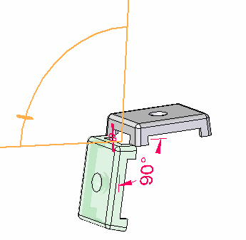
Click here to download the parts and assembly files for the activity.
Overview
The objective of this activity is to position a part using the Angle relationship.
This activity shows several options that are used to position parts within an assembly using the Angle relationship.
Objectives
You will open an assembly with unconstrained parts, and then use the Angle relationship to position the parts.
-
Open Angle.asm with all the parts active.
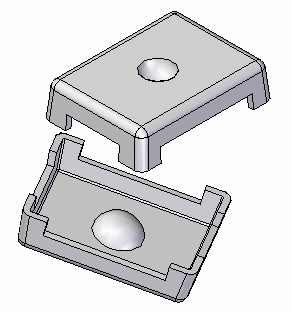
To position the lid, the first relationship you establish will be the Connect relationship.
Click the Select command and select the part shown. Then click the Edit Definition button as shown.
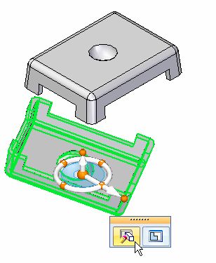
Select the Connect relationship .
Select Assemble Options, and turn on the points option for Flashfit. Check the box as shown.
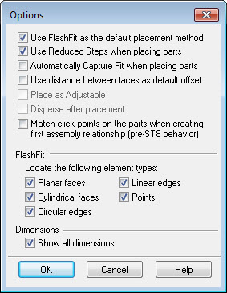
Select the vertex point shown.
You may have to rotate the view to better identify the point.
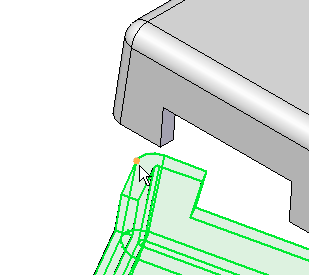
For the target, select the vertex point shown.
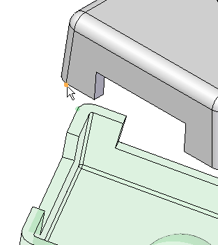
Use the Axial Align relationship for the second relationship.
Click the Axial Align relationship .
Select the linear edge shown.
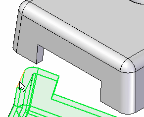
For the target, select the linear edge shown.
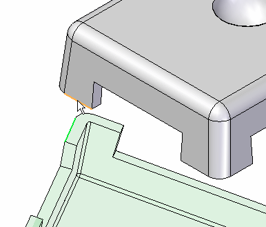
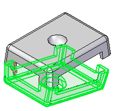
Use the Angle relationship to position the lid. Once placed, the angular value can be modified to reposition the orientation of the lid.
Select the Angle relationship .
Select the face shown as the face to measure to.
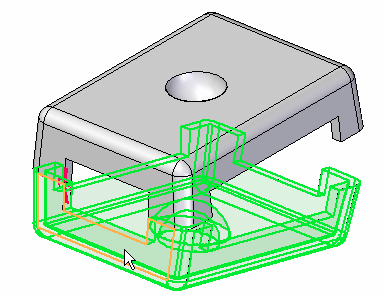
Click the face shown as the face to measure from.
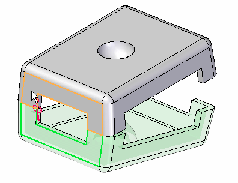
When prompted to click on a plane in which the angle measurement will lie, click the edge shown.
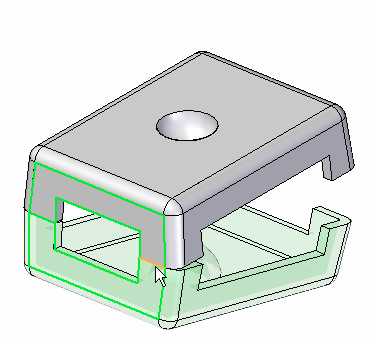
The Angle measurement is established.
Click the Select tool.
Edit the angle and the position of the lid will change.
Press Ctrl+R on the keyboard to rotate the view to a right view.
In PathFinder, select lid.par:2 and then, in the lower pane, select the Angle relationship.
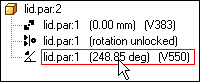
Variable names and angle values may differ from the picture shown. This is not a problem.
On the Assemble command bar, click the Angle Format list, and then move the cursor over the eighth options. Notice the difference in how the angle is measured in each of the different options.
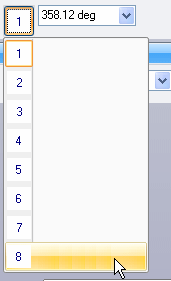
Click the Angle format which gives the measurement shown below. Change the angle to 90°.
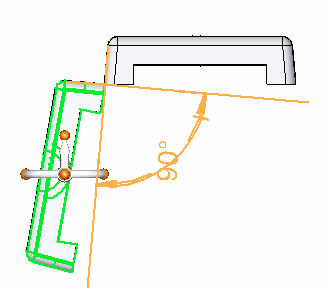
Change the angle to different values and observe the behavior. Change the angle to 190°.
On the ribbon, choose Tools tab→Variables to display the Variable Table. Notice this angular value is shown here and can be edited from the Variable Table. Also the angular value can be driven via a formula to other values within the table.
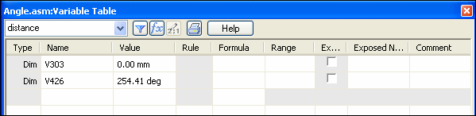
This completes the activity. Close the assembly document without saving.
In this activity you learned to use the Angle relationship to position a lid, and modify the value of the angle to change the position of the lid.
This activity is complete.
-
Click the Close button in the upper-right corner of the activity window.